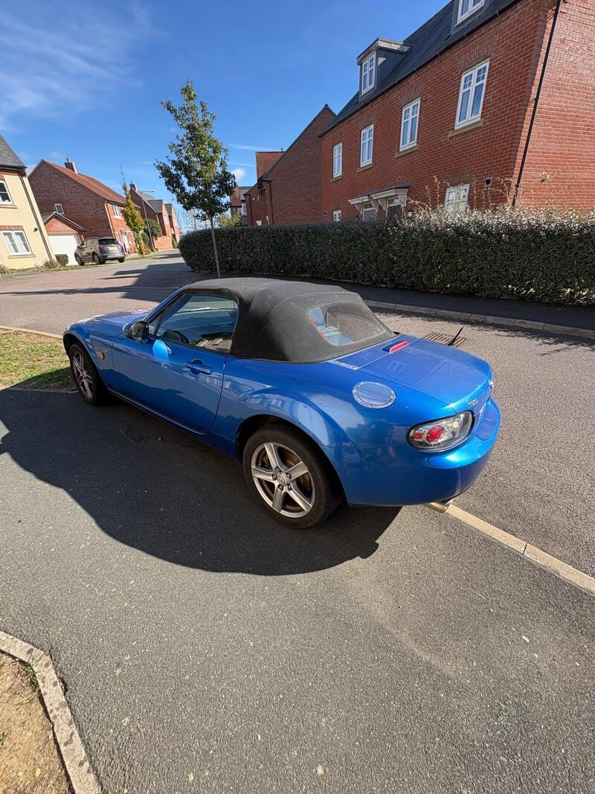
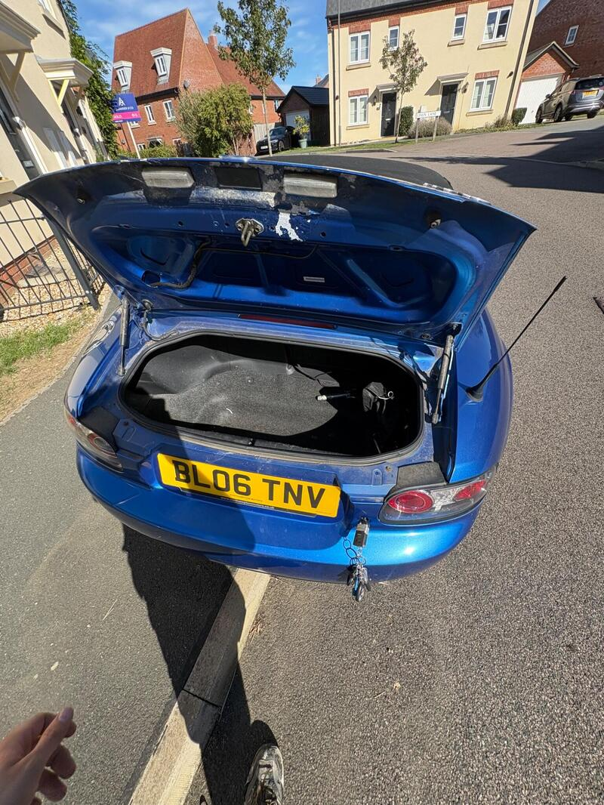
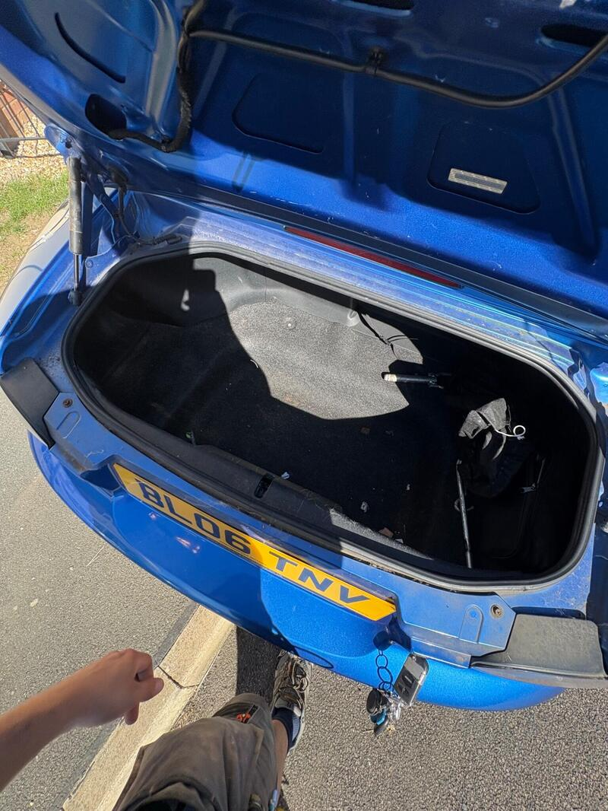

Seller photos from the AutoTrader ad.
Mazda MX-5 2.0i
An honest private 2.0 with a known screen crack. Use the crack to haggle.
Key facts
| Price | £1,999 |
|---|---|
| Year | 2006 |
| Miles | 113,000 |
| Model | Mazda MX-5 2.0i |
| Colour | Blue |
| Registration | 2006 (06 reg) |
| Owners | 9 owners |
| Service history | Not stated |
| MOT (AutoTrader ad) | 14 Sep 2027 (ad) |
| Seller | Private |
| Location | Buckingham |
| From GU7 | 58 mi (AutoTrader) |
| Price cut | £2,300 → £1,999 on 15 Oct |
| Checked | 15 October 2026 |
Why buy it
- Owned 3-4 years with no major issues; 'no rusting' (ad)
- Car cover included
Things to check
Cracked windscreen is an MOT issue; budget for a screen
Small scratch at the rear (ad)
- Mazda MX-5 NC / NB weak spots
Rear subframe, rear arches and sill ends; NB sills and chassis rails. Underseal can hide rot. Engine mostly bulletproof; timing-chain tensioner, seizing calipers, rear diff leaks, cracking coolant tank.
Seller says (extract)
“Reluctant sale, selling as I no longer have the time to drive the car. It has a crack on the windscreen and a small scratch on the back. Comes with a car cover that we used over the winter months when it wasn't driven. I have owned the car for around 3-4 years and in that time I have had no major issues. No rusting, it has always started and never broken down on me. Really a brilliant car but I simply don't have the time to drive it.…”